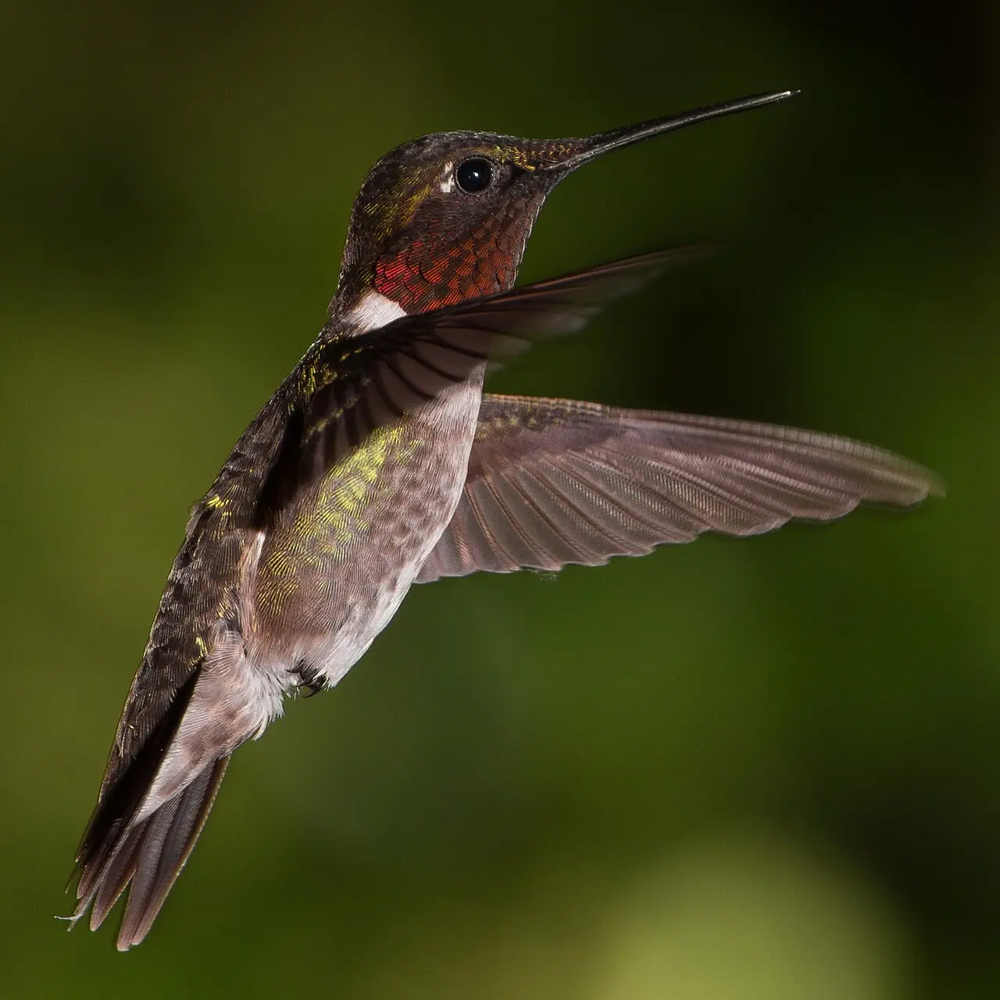
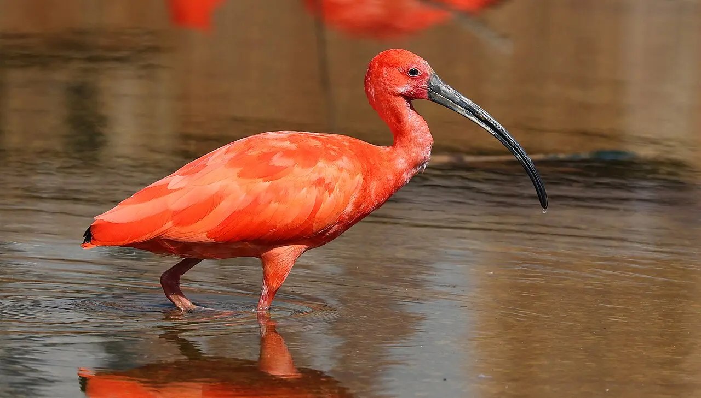
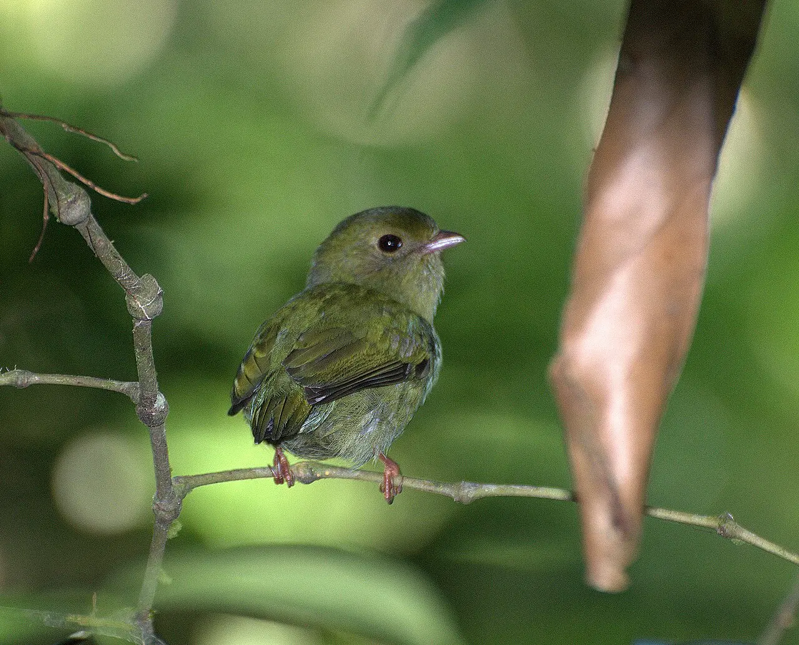

Módulo 4 Aula 20
Cor e exibição
Nem toda cor de ave é feita do mesmo jeito. Algumas vêm do que a ave come, outras vêm da forma da pena. E algumas são feitas para dançar diante de quem as admira.
- A diferença entre cor de pigmento e cor estrutural
- Por que o beija-flor muda de cor quando se mexe
- Como o tangará usa a dança para atrair a fêmea

Ave da aula
Beija-flor Trochilidae
Cor de pigmento
A cor de uma pena pode vir de . As três grandes famílias de pigmentos das aves são os carotenoides, as melaninas e as porfirinas[1]. Os carotenoides costumam dar amarelos, laranjas e vermelhos, e as melaninas, marrons, pretos e cinzas[2]. As aves não fabricam os carotenoides do zero: eles vêm da comida[2].
O guará, de plumagem vermelha, come crustáceos, que são ricos em carotenoides[4, 5]. Há um estudo sobre os carotenoides do guará[5].

Cor de estrutura
Outras cores não vêm de pigmento. Elas vêm da forma da pena: camadas microscópicas de queratina, melanina e ar interferem na luz e produzem cores brilhantes que mudam com o ângulo. É a [1, 2]. Nos beija-flores, o brilho da garganta (o ) vem de barbas com camadas de melanossomos separadas por queratina[3]. O brilho depende do ângulo da luz e do observador[3], e as penas podem parecer quase pretas até a ave virar a cabeça para o sol[8].
Modelo didático: as cores mostradas são ilustrativas, não medidas de uma espécie real[3].

A dança do tangará
Cor e movimento também servem para atrair parceiros. O tangará-dançarino (Chiroxiphia caudata), da Mata Atlântica, é famoso por isso. Grupos de 4 a 6 machos usam o mesmo local de exibição, e existe uma hierarquia entre eles[6]. Quando uma fêmea chega, dois ou três machos fazem juntos uma dança de pulos; depois, um só macho, em geral o dominante, faz a exibição final[6]. Estudos recentes analisam a consistência dessa dança e como a fêmea escolhe[7].

Macho
Azul e preto, com um boné vermelho.

Fêmea
Verde-oliva, discreta. Machos e fêmeas têm aparências bem diferentes nesta espécie, um caso de .
Palavras novas
Teste rápido
Sem nota. Se errar, tente de novo.
De onde vêm os carotenoides das penas?
Por que o gorjal do beija-flor muda de cor?
Quem faz a dança final para a fêmea no grupo do tangará?
Referências e leitura complementar
Onde conferir o que foi dito nesta aula. Os números entre colchetes no texto levam a estas fontes. Os links abrem em outra aba.
- How Birds Make Colorful FeathersBird Academy · Cornell Lab of Ornithology · inglêsPigmentos, estrutura da pena e cor.
- Molecular and Evolutionary Basis of Avian Plumage ColourPubMed Central (artigo científico) · inglês · leitura complementarPigmentos e cores estruturais nas penas.
- Iridescent colouration of male Anna's hummingbird (Calypte anna) caused by multilayered barbulesPubMed Central (artigo científico) · inglêsA iridescência do beija-flor vem de camadas dentro da pena.
- Diet and Foraging – Scarlet Ibis – Eudocimus ruberBirds of the World · Cornell Lab of Ornithology · inglêsO guará come crustáceos, fonte dos pigmentos vermelhos.
- Carotenoids of the scarlet ibisPubMed (artigo científico) · inglês · leitura complementarEstudo dos carotenoides do guará.
- Cooperative behavior and social organization of the Swallow-tailed Manakin (Chiroxiphia caudata)Behavioral Ecology and Sociobiology · inglêsO tangará-dançarino: machos em dupla dançam para a fêmea.
- Display consistency in swallow-tailed manakins: group size effects and implications for female choicePubMed Central (artigo científico) · inglês · leitura complementarEstudo sobre a dança em grupo do tangará.
- HummingbirdsSmithsonian's National Zoo and Conservation Biology Institute · inglêsMetabolismo, batimentos do coração e torpor dos beija-flores.
Os endereços foram abertos e conferidos em 29/09/2026. Alguns sites de revistas científicas e de órgãos oficiais exigem verificação humana e não puderam ser testados por robô. Sites externos podem mudar ou sair do ar.
Para levar
Em três frases
- A cor das penas vem de pigmentos, da estrutura da pena, ou de uma combinação dos dois.
- Na cor estrutural, como a do beija-flor, camadas microscópicas dentro da pena fazem a cor mudar com o ângulo.
- Em muitas espécies, a cor e a dança servem para atrair parceiros, como no caso do tangará.